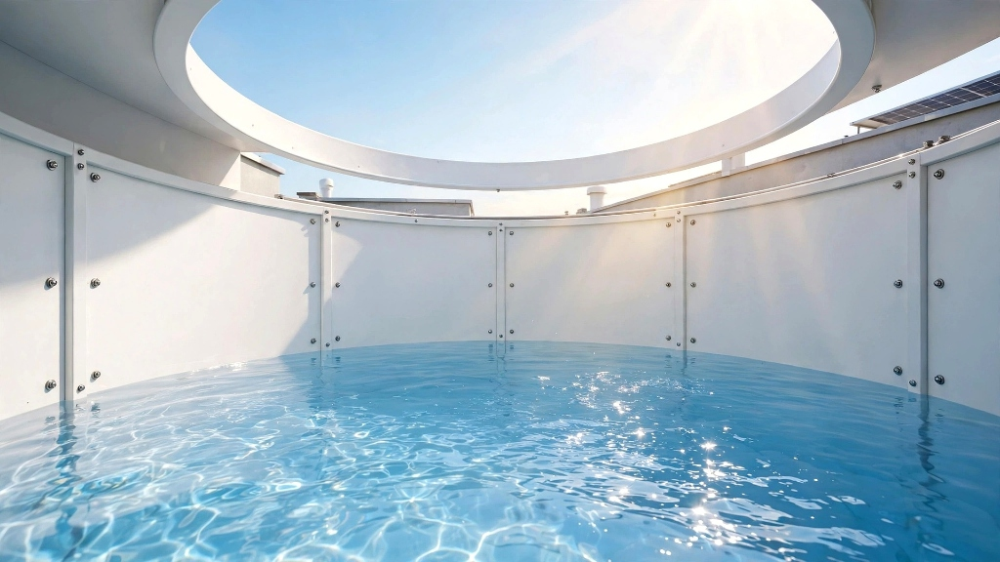
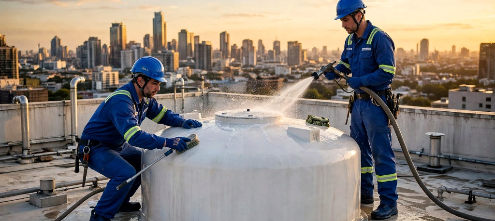
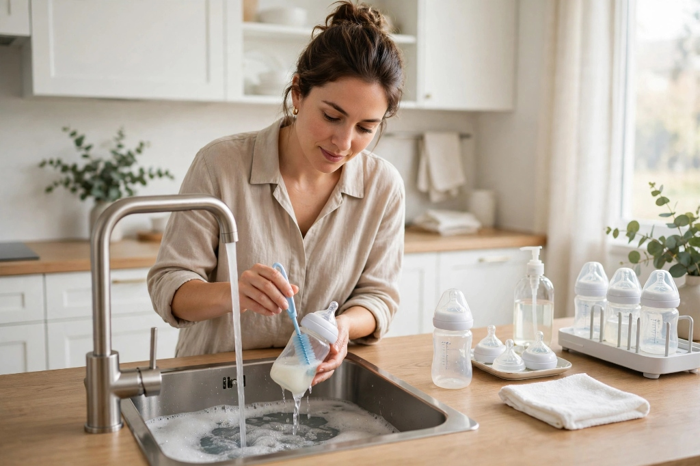

Water Safety • 5 min read
5 Dangerous Signs Your Rooftop Water Tank Is Contaminated
From yellowish bath runoff to unexplained stomach cramps, discover how bottom sludge cakes silently infect domestic lines.

Say goodbye to slimy sludge, black mould, and waterborne bacteria. Our certified engineers utilize industrial rotary high-pressure jets, vacuum de-sludging, and hospital-grade UV radiation to render your water supply 100% pure and potable.

Overhead and underground storage units accumulate heavy minerals, biological sludge, algae, and virulent pathogens over just 90 days of normal domestic use.
E.coli and Salmonella thrive in warm rooftop tank sediments, contaminating water used daily for brushing teeth, bathing children, and rinsing fruits.
Rust flakes, decomposing organic matter, and heavy mineral mud settle at the tank floor, choking plumbing lines and burning out expensive water heaters.
Loose or cracked tank covers allow mosquitoes, geckos, and pigeon droppings access, spreading serious gastrointestinal infections across households.
Acidic sludge and calcification migrate into interior wall pipes, causing yellow bathtub stains, low faucet pressure, and persistent tap odors.
Traditional cleaners use dirty brooms and toxic bleach that corrode tank walls. AquaPure uses non-invasive German mechanized equipment and UV-C germicidal light.
High-output submersible pumps drain stagnant top water without churning bottom mud or overflowing onto your rooftop surface.
Heavy-duty industrial slurry suction pumps suck out viscous muck, mud cakes, and mineral sediment from corner joints.
Oscillating rotary pressure jets strip away hard calcium calcification and algae without scratching polymer tank plastic.
Dual-motor wet vacuum extractor siphons away all residual suspended droplets and silt, leaving the tank bone dry.
Food-grade organic antimicrobial mist destroys anaerobic bacterial colonies without chemical odor or toxic residue.
254nm ultraviolet germicidal lamps neutralize microscopic pathogens, cysts, and viruses that chlorine cannot kill.
On-site digital testing of TDS, pH, and Turbidity (NTU), with complete before/after photos uploaded to your dashboard.
No pungent bleach fumes. Your overhead storage tank is safe to refill and drink from immediately upon completion.

Tailored for Sintex, PVC, RCC concrete, and stainless steel rooftop tanks. Eliminates algae, sand, and bacterial biofilm safely.

Heavy-duty extraction of deep clay mud, municipal pipeline silt, and borewell sand from concrete and masonry sumps.

Medical-grade bio-sterilization utilizing non-toxic eco-certified organic agents and UV-C germicidal emitters.

Hydro-pulsed air and water de-scaling removes yellow rust lines, calcification, and trapped debris from internal pipe runs.
Select your tank specifications and any required sanitization add-ons. Upfront rates with 0% hidden travel charges.
Includes complete 7-stage mechanized service, digital water test report, and 30-day purity warranty.
We verify microbiological purity using digital nephelometers and bacterial colony counters after every cleaning visit.
Suspended particulate count measuring cloudiness.
Living aerobic coliform count in water sample.
Threshold odour rating caused by decaying algae sediments.
Neighborhood cleaners often use cheap chemical bleaching powders and abrasive wire brushes. Bleaching powder contains corrosive calcium hypochlorite that leaches toxic plasticizers from polymer tanks into your family's drinking supply.
Underground sumps trap toxic gases like hydrogen sulfide and methane. AquaPure enforces strict OSHA-compliant confined space life-safety protocols.
Continuous high-cfm air circulation purges trapped stagnant fumes and pumps fresh ambient oxygen throughout the sump floor.
Technicians verify oxygen levels exceed 19.5% and confirm zero hazardous combustible gases before entering the manhole.
A trained safety observer remains stationed at the sump opening at all times with certified fall-arrest and retrieval gear.
Rinse fresh vegetables, soak grains, and cook family meals knowing your water is free of sediment mud and sewage bacterial contamination.

Protect skin from itchy eczema and hair from drying mineral calcification caused by sediment accumulating in hot water geysers.
Keep oral mucosa safe from waterborne pathogens that multiply inside warm rooftop plumbing runs overnight.

Sterilize baby pacifiers, feeding bottles, and toddler clothes in water that meets rigorous hospital sterility standards.
"We were shocked when the AquaPure team showed us photos inside our rooftop tank. There was 4 inches of black silt at the bottom! Within an hour, they scoured it spotlessly clean and UV treated it. The tap water smells sweet and pure again."
"With two toddler twins at home, clean bathing water is non-negotiable. AquaPure’s AMC plan has been a blessing. They automatically send reminders every 4 months and their technicians are extremely courteous and punctual."
"Our 120-flat apartment society signed up for the AquaPure Commercial AMC. They completed our massive 50,000L underground sump and 8 rooftop tanks in 48 hours with minimal water disruption. Outstanding professional service."
Enroll in AquaPure Care 365. Receive 3 scheduled mechanized deep cleans per year, quarterly digital lab reports, priority emergency dispatch, and a 20% discount on pipeline flushing.
From yellowish bath runoff to unexplained stomach cramps, discover how bottom sludge cakes silently infect domestic lines.
Learn why crude chlorine powders erode plastic polymers and create cancer-causing trihalomethanes in residential water.
Step-by-step blueprint for managing 100,000L underground sumps, resident notifications, and zero water wastage.
Join over 48,000 households enjoying clean, crystal-clear, germ-free water. Book your mechanized tank and sump cleaning visit in under 60 seconds.